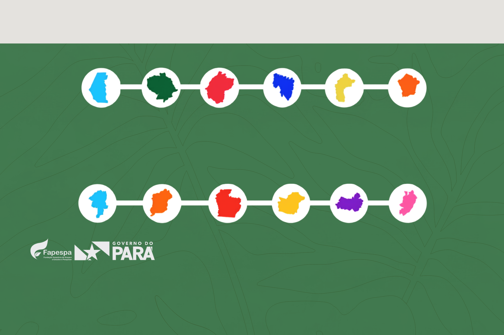

Radar de Indicadores das Regiões de Integração
Radar de Indicadores das Regiões de Integração
Mercado de Trabalho
Emprego formal e dinâmica ocupacional regional.
Ver dados de Mercado de TrabalhoFinanças Públicas
Receitas, despesas e capacidade fiscal das regiões.
Ver dados de Finanças PúblicasAssistência e Previdência Social
Proteção social, benefícios e cobertura socioassistencial regional.
Ver dados de Assistência e Previdência SocialMapas de Indicadores das Regiões de Integração
Este espaço apresenta os Mapas de Indicadores das Regiões de Integração, os quais fornecem uma visão detalhada sobre as dinâmicas territoriais e socioeconômicas do estado. Esses mapas permitem uma análise integrada que apoia o planejamento estratégico e a tomada de decisões no âmbito das políticas públicas.
Sobre a FAPESPA e a DETGI
A FAPESPA tem participação estratégica no modelo de planejamento e governança de políticas públicas do Estado do Pará, promovendo ciência, tecnologia e inovação. A DETGI elabora estudos e análises técnicas que subsidiam a gestão pública e a sociedade, acompanhando indicadores socioeconômicos e ambientais.
Leia Mais